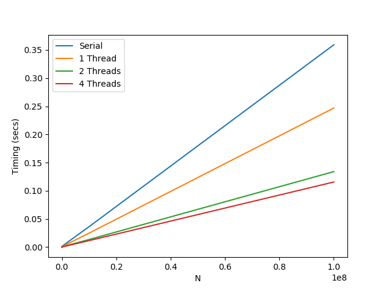

OpenMP
Introduction
OpenMP is an API (application programming interface) for platform-independent shared-memory parallel programming in C, C++ and Fortran.
Version 5.0 is now available (from 2018) although this will not yet be implemented in most compilers.
To install OpenMP on Linux:
sudo apt-get install libomp-devTo compile a code with OpenMP (and the gcc compiler):
gcc <code_name> -fopenmpCompiling an OpenMP code without this flag simply gives a sequential code.
Basics
- Philosophy: augment sequential code with pragmas that indicate to the compiler how to parallelize.
- The compiler will ignore any pragmas is does not recognise (but we can use
-Wunknown-pragmasto report any unknown pragmas. - Number of threads can be set with the environment variable OMP_NUM_THREADS, or with
set_num_threads()in the code itself. We refer to the group of threads currently executing the code as a team.
Basics
First code: hello world
#include <stdio.h>
int main() {
#pragma omp parallel
printf("Hello World!");
}Listing 6.1
OpenMP runtime library
There is a runtime library that contains functions that can access information about the threads.
#include <stdio.h>
#include <omp.h>
int main() {
#pragma omp parallel num_threads(4)
{
int i = omp_get_thread_num();
int n = omp_get_num_threads();
printf("Hello World from thread %d of %d.",i,n);
}
}Listing 6.2
Analysing the code
#include <omp.h>includes the OpenMP runtime library header file where the function definitions foromp_get_thread_numandomp_get_num_threadsare given.int i = omp_get_thread_num();declares the variableias an integer (thus specifying it occupies 2 or 4 bytes, depending on compiler/system) and then assigns it the value returned by theomp_get_thread_numfunction.- Note that
omp_get_thread_num()is a function call without arguments, but we must include the parentheses (just like in Python). printf("Hello World from thread %d of %d.",i,n);shows how to print variables to the screen. The%dis a format specifier that tells the compiler we will display a signed integer.
C has various format specifiers: https://codeforwin.org/2015/05/list-of-all-format-specifiers-in-c-programming.html
Masking parts of the code
We cannot compile the previous code without -fopenmp because it uses OpenMP runtime library files.
We can avoid this issue by using preprocessor directives:
#if defined(_OPENMP)
#include <omp.h>
#endif
...
#if defined(_OPENMP)
// code explicitly depending on omp.h
#else
// refactored code not depending on omp.h
#endifParallel for
#pragma omp parallel for
for (...) {
...
}// this is a compact version of...#pragma omp parallel
{
#pragma omp for
for (...) {
...
}
}If we do not use "#pragma omp for" then each thread would run the whole for loop!
Parallel for
- This splits the $n$ indices in the loop into pieces of size $n/p$ where $p$ is the number of threads.
- Thus the compiler needs to determine the total number of iterations at compile time.
- Therefore we cannot manipulate the iteration index or its bounds in the body of the
forloop.
Restrictions:
- Loop iteration variable must be an integer (OpenMP v2.0). Unsigned integers allowed from v3.0.
- Loop control parameters must be the same for all threads.
- We cannot branch out of a loop, including early exits using
break.
OpenMP just parallelises the loop among threads. We (the programmers) must ensure there are no race conditions!
Race condition
- when two (or more) operations take place on the same piece of data, leading to potential errors due to the operations taking place in the wrong order.
Vector addition
Compute the sum of two integer-valued vectors: $z[i] = x[i]+y[i]$.
#include <stdio.h>
#include <stdlib.h>
#include <omp.h>
#define num_entries 1000000
int x[num_entries];
int y[num_entries];
int z[num_entries];
int main() {
double end_time, start_time, time_spent;
#pragma omp parallel for
for (int i = 0; i < num_entries; i++) {
x[i] = i;
y[i] = num_entries - i;
}
start_time = omp_get_wtime();
for (int i = 0; i < num_entries; i++) {
z[i] = x[i] + y[i];
}
end_time = omp_get_wtime();
time_spent = end_time - start_time;
printf("Time in serial sum: %lf\n",time_spent);
start_time = omp_get_wtime();
#pragma omp parallel for
for (int i = 0; i < num_entries; i++) {
z[i] = x[i] + y[i];
}
end_time = omp_get_wtime();
time_spent = end_time - start_time;
printf("Time in parallel sum: %lf\n",time_spent);
#pragma omp parallel for
for (int i = 0; i < num_entries; i++)
if (z[i] - num_entries)
printf("error at position %d",i);
}Vector addition: execution times
Vector addition: speedup
Vector addition: comments
Each parallel loop is embarrassingly parallel because there are no data dependencies between elements of the vectors.
The computation here is so simple that the algorithm spends much more time in memory access than in calculation: it is memory-bound.
We should not expect much increase in performance for more cores (threads), and in fact would likely see degradation.
Variable sharing and privatisation
The following code prints all index combinations $(i,j)$ to the screen (without error in C99).
#include <stdio.h>
int main () {
#pragma omp parallel for
for (int i = 0; i < 4; i++)
for (int j = 0; j < 4; j++)
printf("%d %d\n",i,j);
}Variable sharing and privatisation
Older versions of C do not permit variable declarations within the for loop. We must instead write:
#include <stdio.h>
int main () {
int i,j; // variables declared outside loops
#pragma omp parallel for
for (i = 0; i < 4; i++)
for (j = 0; j < 4; j++)
printf("%d %d\n",i,j);
}This code gives erroneous results.
Variable sharing and privatisation
#pragma omp parallel for
for (i = 0; i < 4; i++)
for (j = 0; j < 4; j++)- The problem is that declaring the $j$ index outside the loops changes its scope. Effectively it becomes a global variable for all threads.
- Thus each thread changes the global value (seen by all other threads) and so changes the loop behaviour for the other threads.
- The problem is solved by using
#pragma omp parallel for private(j), which ensures each thread has its own local copy of $j$.
Variable sharing and privatisation
#include <stdio.h>
int main () {
int i = 1;
#pragma omp parallel private(i)
{
printf("%d\n",i); // i not initialised, value is not defined
}
}The private $i$ within the parallel block is not assigned a value.
Variable sharing and privatisation
#include <stdio.h>
int main () {
int i = 1;
#pragma omp parallel firstprivate(i)
{
printf("%d\n",i); // i not initialised, value is not defined
}
}Using firstprivate we copy the value of the global $i$ to the local one.
Variable sharing and privatisation
Accessing thread-local variables outside their scope:
#include <stdio.h>
#include <omp.h>
int main () {
int num = omp_get_max_threads();
int aux[num];
int i = 1;
#pragma omp parallel firstprivate(i) num_threads(num)
{
int j = omp_get_thread_num();
i += j;
aux[j] = i;
}
for (int k = 0; k<num; k++){
printf("%d\n",aux[k]);
}
}Privatised variables are not unique: each thread has its own value. More sophisticated methods for recovering thread-local variables are called reductions.
Variable sharing and privatisation
In the case of loops, we can get the current value of a private variable after the last iteration using lastprivate:
#include <stdio.h>
int main () {
int i;
#pragma omp parallel for lastprivate(i) num_threads(16)
for (int j = 0; j < 16; j++)
i = j;
printf("%d\n",i);
}The result is 15. Without lastprivate the value of $i$ is the number of whatever thread finished last. The returned value is unique if it does not depend on the execution order of the iterations (as in this example).
Variable sharing and privatisation
lastprivateandfirstprivatecan be combined to copy a global value into parallel scope, and then return the last iteration of the thread-local value. It is better practice to explicitly transfer thread-local to global using constructions like the arrayaux.- Variables that are not private are shared by default (this can be made explicit using
shared). - We can privatise/share more than one variable, e.g.
private(i, j). - Thread-local arrays can be allocated and deallocated within the parallel scope.
Matrix vector multiplication
Multiplication of $m \times n$ matrix by $n$-dimensional vector:
$b_i = \sum_{j=0}^{n-1} A_{ij} \cdot x_j$ for all $i \in \{0,\ldots,m-1\}$.
Matrix vector multiplication
#include <stdio.h>
#include <stdbool.h>
#include <stdlib.h>
#include <omp.h>
void init(int A[], int x[], int m, int n) {
for (int row = 0; row < m; row++)
for (int col = 0; col < n; col++)
A[row*n+col] = row >= col ? 1 : 0;
for (int col = 0; col < n; col++)
x[col] = col;
}
void mult(int A[], int x[], int b[], int m, int n, bool parallel){
#pragma omp parallel for if(parallel)
for (int row = 0; row < m; row++) {
int accum = 0;
for (int col = 0; col < n; col++)
accum += A[row*n+col]*x[col];
b[row] = accum;
}
}
int main () {
int n = 40000;
int m = 40000;
int* A = malloc(m*n * sizeof(int));
int* x = malloc(n * sizeof(int));
int* b = malloc(m * sizeof(int));
double start_time, end_time, time_spent;
init(A, x, m, n);
start_time = omp_get_wtime();
for (int k = 0; k < 3; k++) {
mult(A, x, b, m, n, false);
}
end_time = omp_get_wtime();
time_spent = end_time - start_time;
printf("Time in serial sum: %lf\n",time_spent);
start_time = omp_get_wtime();
for (int k = 0; k < 3; k++) {
mult(A, x, b, m, n, true);
}
end_time = omp_get_wtime();
time_spent = end_time - start_time;
printf("Time in parallel sum: %lf\n",time_spent);
for (int index = 0; index < m; index++)
if (b[index] != index*(index+1)/2)
printf("Error at position %d %d\n",index,b[index]);
}The matrix is initialised with $1$ below the diagonal and $0$ everywhere else. The vector $x$ is initialised with ascending integers. Thus $b$ should contain the partial sums from $0$ to $i$.
Matrix vector multiplication
Only parallel code:
#pragma omp parallel for if(parallel)
The pragma contains an if statement accepting a Boolean argument to switch the parallelised part on or off.
For $m=n=40000$ this code gives approximately $11.4$s for the serial sum and $3.1$s for the parallelised sum (on 8 threads, 4 physical cores). A speedup of $3.7$.
Note that on my machine $m$ and $n$ cannot be much bigger or the array $A$ exceeds the memory available! $40000 \times 40000$ $4$ byte integers $= 6.4 \times 10^9$ bytes, or about $6$Gb.
This code is again memory-bound so it will not scale well to many cores.
Basic parallel reductions (nearest-neighbour classifier)
We study the performance of a one-nearest-neighbour (1NN) classifier trained on the MNIST dataset of handwritten digits.
This is a machine-learning (AI) application...
Nearest-neighbour classifier
- Requires a pairwise distance measure $dist(X_{\text{test}}^{(i)},X_{\text{train}}^{(j)})$ that defines the "similarity" between the two objects $X_{\text{test}}^{(i)}$ and $X_{\text{train}}^{(j)}$.
- Goal: classify based on a training set of objects $X_{\text{train}}^{(j)}$ and their labels $Y_{\text{train}}^{(j)}$.
- Operation of the classifier: $$Y_{\text{test}}^{(i)} \leftarrow Y_{\text{train}}^{(j*)} \quad \text{where} \quad j^* = \underset{j}{\text{argmin}}\; dist(X_{\text{test}}^{(i)},X_{\text{train}}^{(j)})$$
- Basic idea: you have a set of objects and labels. When you get a new object without a label you compare it to your set of objects and find the nearest match, assigning the associated label to your new object.
MNIST dataset
MNIST dataset
- 65000 images stored as gray-scale $28 \times 28$ arrays, labelled from $0$ to $9$.
- We use 55000 images as the training set, and the remaining 10000 as the test set.
- Each image will be stored as a vector of $d=784$ intensity values.
- The $n$ images of the training set are stored as a matrix $D_{jk}^{\text{train}} = X^{(j)}_{\text{train}}[k]$ of shape $n \times d$ where $j$ denotes the image index and $k$ is the pixel index within each image.
- The test set is stored similarly: $D_{ik}^{\text{test}} = X_{\text{test}}^{(i)}[k]$ with shape $m \times d$, storing $m$ images of dimension $d$.
All-pairs distance computation
We want the all-pairs distance matrix $\Delta$ of shape $m \times n$ with squared Euclidean distance as the similarity measure:
$$\Delta_{ij} = dist(X_{\text{test}}^{(i)},X_{\text{train}}^{(j)}) = \sum_{k=0}^{d-1}(X_{\text{test}}^{(i)}[k] - X_{\text{train}}^{(j)}[k])^2$$
where $i$ is the index over the test set, and $j$ runs over the training set.
This calculation has time complexity $\mathcal{O}(m \cdot d \cdot n)$, which is almost three orders of magnitude higher than the memory complexity $\mathcal{O}(m \cdot n)$, so we should see better scaling than in the matrix vector multiplication code.
All-pairs distance computation: coarse-grained parallelism
By "coarse-grained parallelism" we mean parallelising the outer loops:
void all_vs_all(double * test, double * train, double * delta,
int num_test, int num_train, int num_features, bool parallel) {
#pragma omp parallel for collapse(2) if(parallel)
for (int i = 0; i < num_test; i++)
for (int j = 0; j < num_train; j++) {
double accum = 0.0;
for (int k = 0; k < num_features; k++) {
const double residue = test[i*num_features+k]
- train[j*num_features+k];
accum += residue*residue;
}
delta[i*num_train+j] = accum;
}
}All-pairs distance computation: coarse-grained parallelism
The collapse(2) addition to the pragma causes the two outer loops to run as if they were a single loop over a single hyper-index $h$:
#pragma omp parallel for
for (int h = 0; h < num_test*num_train; h++) {
int i = h / num_test;
int j = h % num_test;
}This helps to ensure that all cores execute threads if, for example, there are less test images than cores.
The inner loop over each image's pixels is not parallelised here. This would be "fine-grained parallelism".
All-pairs distance computation: fine-grained parallelism
A simplistic attempt would be the following:
void all_vs_all(double * test, double * train, double * delta,
int num_test, int num_train, int num_features, bool parallel) {
for (int i = 0; i < num_test; i++)
for (int j = 0; j < num_train; j++) {
double accum = 0.0;
#pragma omp parallel for
for (int k = 0; k < num_features; k++) {
const double residue = test[i*num_features+k]
- train[j*num_features+k];
accum += residue*residue; // RACE CONDITION!
}
delta[i*num_train+j] = accum;
}
}Fine-grained parallelism: race condition
The parallelised version of the inner loop introduces a race condition because the load-modify-store operation accum += some_value on the shared variable accum is not atomic.
An atomic operation is one that completes in a single step relative to other threads. The idea is that no other thread can "interfere" within an atomic operation.
OpenMP allows us to force the accum operation to be atomic...
Fine-grained parallelism: atomic operation
void all_vs_all(double * test, double * train, double * delta,
int num_test, int num_train, int num_features, bool parallel) {
for (int i = 0; i < num_test; i++)
for (int j = 0; j < num_train; j++) {
double accum = 0.0;
#pragma omp parallel for
for (int k = 0; k < num_features; k++) {
const double residue = test[i*num_features+k]
- train[j*num_features+k];
#pragma omp atomic // forcing atomicity
accum += residue*residue;
}
delta[i*num_train+j] = accum;
}
}Fine-grained parallelism: mutex
Another solution is to use mutex (mutual exclusion) on the statement accum += some_value.
Mutual exclusion declares some part of the code to be critical. A thread of execution can never enter its critical section at the same time as another thread.
Mutex effectively makes the code serial in the critical section.
Fine-grained parallelism: mutex
void all_vs_all(double * test, double * train, double * delta,
int num_test, int num_train, int num_features, bool parallel) {
for (int i = 0; i < num_test; i++)
for (int j = 0; j < num_train; j++) {
double accum = 0.0;
#pragma omp parallel for
for (int k = 0; k < num_features; k++) {
const double residue = test[i*num_features+k]
- train[j*num_features+k];
#pragma omp critical // using mutual exclusion
// (forcing serial execution)
accum += residue*residue;
}
delta[i*num_train+j] = accum;
}
}Fine-grained parallelism: atomic or mutex
None of these methods are ideal as they either give the wrong result or degrade performance.
#pragma omp criticalmay be used anywhere.#pragma omp atomiconly applies to particular operations such as +=, *=, ++, etc.
Fine-grained parallelism: reduction
We can resolve this by using a reduction operation across private variables.
- Each thread declares thread-local
accuminitialised with $0$. - The summation is performed by each thread independently ($n/p$ numbers, $n$ iterations, $p$ threads).
- Sum partial results computed by each thread and add this to the global value.
- OpenMP provides the
reductionkeyword to implement this procedure.
Fine-grained parallelism: reduction
void all_vs_all(double * test, double * train, double * delta,
int num_test, int num_train, int num_features, bool parallel) {
for (int i = 0; i < num_test; i++)
for (int j = 0; j < num_train; j++) {
double accum = 0.0;
#pragma omp parallel for reduction(+:accum)
for (int k = 0; k < num_features; k++) {
const double residue = test[i*num_features+k]
- train[j*num_features+k];
accum += residue*residue;
}
delta[i*num_train+j] = accum;
}
}Fine-grained parallelism: reduction
- Syntax:
reduction(operator:variable,...) - Operators: built-in support for +, *, min, max, &, |, ^, &&, ||
- Custom associative operators with individual initialisation and complex pairwise combination rules can be defined.
Parallelised label prediction (inference)
Returning to the 1NN classifier, we now have the all-pairs distance matrix $\Delta$. Now we need to assign labels.
- For fixed index $i$ we scan through all $n$ distance scores $\Delta_{ij}$ and determine index $j^*$ of nearest image $X_{\text{train}}^{(j^*)}$ in the training set.
- We then set predicted class label to $Y_{\text{train}}^{(j^*)}$.
- Given that the "test" set is actually a classified set, we can compare the true classification $Y_{\text{test}}^{(i)}$ with the prediction.
- The labels for the MNIST dataset are stored as $10$-element vectors, where the index of the only non-zero element (equal to $1$) corresponds to the digit (e.g. [0,0,0,1,0,0,0,0,0,0] is $3$).
Parallelised label prediction (inference)
double accuracy(int * label_test, int * label_train, double * delta,
int num_test, int num_train, int num_classes, bool parallel) {
int counter = 0;
#pragma omp parallel for reduction(+:counter) if(parallel)
for (int i = 0; i < num_test; i++) {
double bsf = DBL_MAX; // from <float.h>
int jst = -1; // dummy value
for (int j = 0; j < num_train; j++) {
const double value = delta[i*num_train+j];
if (value < bsf) {
bsf = value;
jst = j;
}
}
bool match = true;
for (int k = 0; k < num_classes; k++)
match &&= label_test[i*num_classes+k]
== label_train[jst*num_classes+k];
counter += match;
}
return (double) counter/(double) num_test;
}Parallelised label prediction (inference)
- This code uses a "coarse-grained" parallelisation with the pragma on the outer loop over the test set images.
- First stage of code: determine $j^*$ for fixed index $i$ by searching for smallest value in $\Delta_{ij}$
- Second stage: compare the associated predicted label with the true label.
- Both inner loops could be parallelised in a "fine-grained" manner:
First loop would be an argmin reduction (minor modification of a min reduction)
Second loop would be #pragma omp parallel for reduction(&&:match).
Parallelised 1NN classifier: main code
int main(int argc, char* argv[]) {
// run parallelised when any command line argument is given
const bool parallel = argc > 1;
if (parallel) {
printf("Running in parallel.\n");
}
else {
printf("Running sequentially.\n");
}
const int num_features = 28*28;
const int num_classes = 10;
const int num_entries = 65000;
const int num_train = 55000;
const int num_test = num_entries-num_train;
double input[num_entries*num_features];
double label[num_entries*num_classes];
double delta[num_test*num_train];
load_binary(input, "X_image_file.bin");
load_binary(label, "Y_label_file.bin");
const int inp_off = num_train * num_features;
all_vs_all(input + inp_off, input, delta, num_test, num_train, num_features, parallel);
const int lbl_off = num_train * num_classes;
double acc = accuracy(label + lbl_off, label, delta, num_test, num_train, num_classes, parallel);
printf("Test accuracy: %f",acc);
}Scheduling of imbalanced loops (inner products)
Calculating $C = A \cdot A^T$ (inner product of a matrix) results in a symmetric matrix.
Thus we only need to calculate values above the diagonal.
Therefore using #pragma omp parallel for for the outer loop of the matrix multiplication leads to load imbalancing because some threads compute more entries.
Static/dynamic schedules of for-loops
For $p$ threads, partition the set of $m$ rows of $C$ into batches of fixed size $c$ where $1 \leq c \leq \lceil m/p \rceil$
Process the $\lceil m/c \rceil$ batches sequentially using the $p$ threads.
Special cases: $c = 1$ (cyclic distribution), $c = \lceil m/p \rceil$ (block distribution).
Static scheduling: predetermined number of batches assigned to each thread.
Dynamic scheduling: consecutively choose next idling thread for unprocessed batch.
Static/dynamic schedules of for-loops - example
Example: $m = 32$ (32 rows in the matrix $C$) and $p = 4$ (4 threads).
Pure block distribution: $c = 8$, so each "batch" consists of $8$ rows of values ($4$ batches).
Static scheduling: 1 batch assigned to each thread.
Dynamic scheduling: batches dynamically assigned as threads become idle.
Static/dynamic schedules of for-loops - example
Example: $m = 32$ (32 rows in the matrix $C$) and $p = 4$ (4 threads).
Pure cyclic distribution: $c = 1$, so each "batch" is just a single row of values.
Static scheduling: $1$ batch assigned to each thread, then we pass through assigning another batch to each thread. In the end we have $8$ batches (rows) for each thread (as before).
Dynamic scheduling: batches assigned as threads become idle.
OpenMP scheduling options
static: All iterations divided into (roughly) $\lceil m/c \rceil$ chunks each performing $c$ sequential iterations over the $m$ indices. Batches are distributed amongst threads, and if one completes its computation it stays idle until others finish. $c = \lceil m/p \rceil$ if not defined (pure block).dynamic: All iterations divided into equal sized chunks, distributed one at a time to the threads once they are idle. $c = 1$ if not defined (pure cyclic).guided: Iterations divided into chunks of decreasing size (up to minimum) and batches are dispatched and allocated to threads in the manner ofdynamicscheduling. $c = \lceil m/p \rceil$ if not defined.auto: scheduling type from the above options is decided by the compiler.runtime: scheduling type set by runtime system usingOMP_SCHEDULEenvironment variable.
OpenMP scheduling options
static and dynamic schedules are usually sufficient. guided is not frequently used, and the last two options cede control over the scheduling type to the operating system/compiler.
Syntax: #pragma omp for schedule(mode, chunk_size) where mode is static/dynamic/etc. and chunk_size is the value of $c$.
OpenMP scheduling example
#include <stdio.h>
#include <bool.h>
#include <omp.h>
#define MODE static
void inner_product(float * data, float * delta, int num_entries, int num_features, bool parallel) {
#pragma omp parallel for schedule(MODE) if(parallel)
for (int i = 0; i < num_entries; i++)
for (int j = i; j < num_entries; j++) {
float accum = 0.0;
for (int k = 0; k < num_features; k++)
accum += data[i*num_entries+k] * data[j*num_entries+k];
delta[i*num_entries+j] = accum;
}
}We cannot use collapse(2) here because the inner loop over $j$ depends on $i$.
OpenMP scheduling example
#include <stdio.h>
#include <stdlib.h>
#include <stdint.h>
#include <stdbool.h>
#include <omp.h>
#define num_pixels 784
#define num_entries 10000
#define MODE static
int read_binary_data(char* filename, bool images, int n_values, uint8_t data[]) {
FILE *fptr;
int dummy;
if ((fptr = fopen(filename,"rb")) == NULL){
printf("Error! opening file");
// Program exits if the file pointer returns NULL.
exit(1);
}
for (int i = 0; i < 4; i++) {
fread(&dummy, sizeof(dummy), 1, fptr);
}
for (int i = 0; i < n_values; i++){
fread(&data[i], sizeof(uint8_t), 1, fptr);
}
fclose(fptr);
}
void inner_product(uint8_t data[], uint8_t delta[], bool parallel) {
#pragma omp parallel for schedule(MODE) if(parallel)
for (int i = 0; i < num_entries; i++) {
for (int j = i; j < num_entries; j++) {
float accum = 0.0;
for (int k = 0; k < num_pixels; k++)
accum += data[i*num_entries+k] * data[j*num_entries+k];
delta[i*num_entries+j] = accum;
}
}
}
int main(int argc, char* argv[]) {
// run parallelised when any command line argument is given
const bool parallel = argc > 1;
double start_time, end_time, time_spent;
if (parallel) {
printf("Running in parallel.\n");
}
else {
printf("Running sequentially.\n");
}
static uint8_t train[num_entries*num_pixels];
static uint8_t delta[num_entries*num_entries];
read_binary_data("t10k-images-idx3-ubyte",true,num_entries,train);
start_time = omp_get_wtime();
inner_product(train, delta, parallel);
end_time = omp_get_wtime();
time_spent = end_time - start_time;
printf("Time in inner product: %lf\n",time_spent);
return 0;
}OpenMP scheduling example
| Time in s | Speedup | |
| Sequential | 110.9 | |
| static (block) | 34.5 | 3.2 |
| static,1 (cyclic) | 27.4 | 4.0 |
| static,32 (block-cyclic) | 26.5 | 4.2 |
| dynamic (pure cyclic) | 25.5 | 4.3 |
| dynamic,32 (block-cyclic) | 25.2 | 4.4 |
Advanced reductions (softmax regression)
Problems with the 1NN classifier
- Major disadvantage is the $\mathcal{O}(n)$ search over all $n$ training samples for each of the $m$ test samples in the inference step.
- Asymptotic time complexity is $\mathcal{O}(m \cdot n)$, this is too much for very large datasets.
- Also this classifier cannot deal with correlations in the features between individual instances of the training set.
Deep neural networks
- State-of-the-art solution for image classification is a deep neural network (DNN).
- A neural network is a set of artificial "neurons" that accept weighted inputs and give some output.
- A basic neural network has a layer of input neurons and a layer of output neurons.
- Additional layers between the input and output are referred to as "hidden" layers.
- A deep neural network is simply a neural network with at least one hidden layer.
Deep neural networks

Deep neural networks
Deep neural networks
- Neural networks are effectively (highly) non-linear functions of the input data.
- For image recognition they work by identifying "features" in the images.
MNIST example: two-layer neural network
MNIST example: two-layer neural network
- Input layer: $d = 28 \times 28 = 784$ neurons.
- Determines a class activation score for each of the $c = 10$ classes in the output layer.
- Network is a non-linear function $f_{\theta}$ mapping $m$ vectors $x^{(i)} \in \mathbb{R}^d$ to $m$ vectors $y^{(i)} \in \mathbb{R}^c$ where $\theta$ is a set of trainable parameters.
- The parameter set $\theta$ is given by $\theta = (W,b)$ where $W$ is a $c \times d$ matrix, and $b$ a vector of $c$ components (the bias vector).
- The inputs to the second layer of neurons (after the input layer) are then: $$z_j^{(i)} = \sum_{k=0}^{d-1} W_{jk} \cdot x_k^{(i)} + b_j \quad \text{for all} \quad i \in {0,\ldots,m-1}, \quad j \in {0,\ldots,c-1}$$
MNIST example: two-layer neural network
- We interpret the $j$-th entry of a vector $z^{(i)}$ as the evidence that the $i$-th input image $x^{(i)}$ should be associated to the $j$-th class label.
- The MNIST label vectors $y^{(i)}$ use "one-hot encoding": they have a single $1$ and all other elements are zero.
- An example: the number $3$ is encoded as $(0,0,0,1,0,0,0,0,0,0)$.
- We thus need to normalise the highest value of $z^{(i)}$ to (almost) one and all other values to (almost) zero.
- We use a softmax activation function.
MNIST example: two-layer neural network
$$y_j^{(i)} = \text{softmax}(z^{(i)})_j = \frac{\exp(z_j^{(i)} - \mu)}{\sum_{j=0}^{c-1} \exp(z_j^{(i)} - \mu)}$$ for any $\mu \in \mathbb{R}$.
This works for any value of $\mu$, although the maximum value in the vector $z^{(i)}$ is usually chosen for floating-point operation stability.
MNIST example: two-layer neural network

MNIST example: two-layer neural network
Feedforward pass of the two-layer network: $$y_j^{(i)} = \text{softmax}(W \cdot x^{(i)} + b)_j$$
- This is a machine learning algorithm because we adjust the values in $W$ and $b$ to ensure accurate prediction of the label vectors.
- We want agreement between $y^{(i)}$ and the actual one-hot encoded label data $\hat{y}^{(i)}$ for the training set.
MNIST example: two-layer neural network
For now we will concentrate on the inference step (using a trained network on our test data):
#include<float.h>
#include<stdint.h>
#include<math.h>
void softmax_regression(float* input, float* output,
float* weights, float* bias,
uint64_t n_input, uint64_t n_output) {
for (uint64_t j = 0; j < n_output; j++) {
float accum = 0.0;
for (uint64_t k = 0; k < n_input; k++)
accum += weights[j*n_input+k]*input[k];
output[j] = accum + bias[j];
}
float norm = 0.0;
float mu = FLT_MIN;
// compute mu = max(z_j)
for (uint64_t j = 0; j < n_output; j++)
mu = fmaxf(mu, output[j]);
// compute exp(z_j-mu)
for (uint64_t j = 0; j < n_output; j++)
output[j] = exp(output[j]-mu);
// compute Z = sum_j exp(z_j)
for (uint64_t j = 0; j < n_output; j++)
norm += output[j];
// compute y_j = exp(z_j)/Z
for (uint64_t j = 0; j < n_output; j++)
output[j] /= norm;
}MNIST example: inference
- Fine-grained parallelism could be implemented in these for loops using standard
parallel foror parallel reductions. - Entire inference step is embarrassingly parallel for all $m$ images in the test set.
- Better to parallelise over different images (data parallelism) than over the individual for loops within the inference step (model parallelism).
MNIST example: inference
Predicted class label is determined using an argmax reduction:
uint64_t argmax(float* neurons, uint64_t n_units) {
uint64_t arg = 0;
float max = FLT_MIN;
for (uint64_t j = 0; j < n_units; j++) {
const float val = neurons[j];
if (val > max) {
arg = j;
max = val;
}
}
return arg;
}MNIST example: accuracy
- The accuracy calculation is very similar to that for the 1NN classifier.
- The class label for each image $i$ in the test set is predicted and compared to the known label.
- This part uses coarse-grained parallelism on the outer loop with a reduction on the
countervariable. - A pure block distribution is sufficient (default) as all regression calls take approximately the same time.
MNIST example: accuracy
float accuracy(uint8_t* input, uint8_t* label, float* weights, float* bias,
uint64_t num_entries, uint64_t num_features, uint64_t num_classes){
uint64_t counter = 0;
#pragma omp parallel for reduction(+:counter)
for (uint64_t i = 0; i < num_entries; i++) {
float output[num_classes];
const uint64_t input_off = i*num_features;
const uint64_t label_off = i*num_classes;
softmax_regression(input+input_off, output, weights, bias, num_features, num_classes);
counter += argmax(output, num_classes) == argmax(label+label_off, num_classes);
}
return (float)counter/(float)num_entries;
}Parameter optimisation: gradient descent
- The $\hat{y}^{(i)}_j$ are the true labels ("ground truth") and $y^{(i)}_j(\theta)$ are the predicted label vector values.
- The agreement between two probability vectors may be calculated using categorical cross-entropy$$H \left( \hat{y}^{(i)},y^{(i)}(\theta) \right) = -\sum_{j=0}^{c-1}\hat{y}^{(i)}_j \cdot \log \left( y^{(i)}_j (\theta) \right) \quad \text{for all} \quad i \in {0,\ldots,m-1}$$
- This vanishes for two identical label vectors as $1 \cdot \log 1 = 0$ and $\lim_{\lambda \to 0} \lambda \cdot \log \lambda = 0$.
Parameter optimisation: gradient descent
- The loss function $L(\theta) = L(W,b)$ measures the accuracy of the model depending on the parameters $\theta = (W,b)$ by averaging the $n$ individual cross-entropy contributions over the input images in the training set: $$L(\theta) = \frac{1}{n}\sum_{i=0}^{n-1} H \left( \hat{y}^{(i)},y^{(i)}(\theta) \right) = -\frac{1}{n}\sum_{i=0}^{n-1}\sum_{j=0}^{c-1} \hat{y}^{(i)}_j \cdot \log \left( y^{(i)}_j (\theta) \right)$$
- The goal is to minimise the non-negative loss function as $L(\theta) = 0$ means perfect label agreement.
- Note that this kind of problem is generally referred to as optimisation in the computer science/mathematics literature.
Parameter optimisation: gradient descent
- The optimisation method we choose here is called gradient descent. It is very popular for neural network training.
- We update the parameters using the gradient of the loss function, $\theta \to \theta - \epsilon \nabla L(\theta)$, in the hope of reaching the values of $\theta$ that correspond to the (global) minimum of $L(\theta)$.
- In practice, this procedure will converge to a local minimum or saddle point for a suitable choice of learning rate $\epsilon > 0$.
Parameter optimisation: gradient descent
The gradients we need are the partial derivatives of the loss function with respect to the parameters: $$\begin{split} \Delta W_{jk} &\equiv \frac{\partial L(W,b)}{\partial W_{jk}} = \frac{1}{n} \sum_{i=0}^{n-1} \left( \text{softmax}(W \cdot x^{(i)}+b)_j - \hat{y}^{(i)}_j \right) \cdot x_k^{(i)} \\ \Delta b_{j} &\equiv \frac{\partial L(W,b)}{\partial b_{j}} = \frac{1}{n} \sum_{i=0}^{n-1} \left( \text{softmax}(W \cdot x^{(i)}+b)_j - \hat{y}^{(i)}_j \right) \end{split}$$
Parameter optimisation: gradient descent
- The update procedure is a sum-reduction over the index $i$ (images in the training set).
- We start with $\Delta W = \Delta b = 0$ and add the contributions for each image $x^{(i)}$
- We then iteratively adjust the weight and bias until convergence: $$W_{jk} \to W_{jk} - \epsilon \Delta W_{jk} \quad \quad b_j \to b_j - \epsilon \Delta b_j$$
Parameter optimisation: gradient descent
Two options for parallelisation:
- Sequentially spawn a team of threads for each of the $c \times d$ elements of $W$, and the $c$ elements of the vector $b$. They subsequently perform a parallel reduction of a single variable over the image index $i$. This would mean creating $c \times (d + 1) \times w$ teams, where $w$ is the number of iterations.
- Better approach: create one team of threads, perform $c \times d$ parallel reductions for $W$ and $c$ parallel reductions for $b$ over the image index $i$. This maintains the same team of threads until convergence.
Parameter optimisation: gradient descent
- OpenMP up to version 4.0 only supports parallel reductions over a few variables. These variables must be known at compile time (specified in
reductionclause). - We would need reductions over thousands of variables for option 2.
- Variables cannot be enumerated with indices, as required for option 2.
- OpenMP v4.5 supports parallel reductions over arrays containing an arbitrary number of reduction variables:
#pragma omp for reduction(operation:array[lower:length])
operation: pre-defined or user-defined reduction identifierarray: pointer to linear memorylower,length: specify range of indices being privatised during reduction.
Training step
void train(uint8_t* input, uint8_t* label, float* weights, float* bias,
uint64_t num_entries, uint64_t num_features,
uint64_t num_classes, uint64_t num_iters,
float epsilon) {
// allocate memory for the gradients
float* grad_bias = malloc(sizeof(float)*num_classes);
float* grad_weights = malloc(sizeof(float)*num_features*num_classes);
// create the team of threads once
#pragma omp parallel
for (uint64_t iter = 0; iter < num_iters; iter++){
// zero the gradients
#pragma omp single
for (uint64_t j = 0; j < num_classes; j++)
grad_bias[j] = 0.0;
#pragma omp for collapse(2)
for (uint64_t j = 0; j < num_classes; j++)
for (uint64_t k = 0; k < num_features; k++)
grad_weights[j*num_features+k] = 0.0;
// compute softmax contributions
#pragma omp for \
reduction(+:grad_bias[0:num_classes]) \
reduction(+:grad_weights[0:num_classes*num_features])
for (uint64_t i = 0; i < num_entries; i++) {
const uint64_t inp_off = i*num_features;
const uint64_t out_off = i*num_classes;
float* output = malloc(sizeof(float)*num_classes);
softmax_regression(input+inp_off, output, weights,
bias, num_features, num_classes);
for (uint64_t j = 0; j < num_classes; j++) {
const uint64_t out_ind = out_off+j;
const float lbl_res = output[j]-label[out_ind];
grad_bias[j] += lbl_res;
const uint64_t wgt_off = j*num_features;
for (uint64_t k = 0; k < num_features; k++) {
const uint64_t wgt_ind = wgt_off+k;
const uint64_t inp_ind = inp_off+k;
grad_weights[wgt_ind] += lbl_res*input[inp_ind];
}
}
free(output);
}
// adjust bias vector
#pragma omp single
for (uint64_t j = 0; j < num_classes; j++)
bias[j] -= epsilon*grad_bias[j]/num_entries;
// adjust weight matrix
#pragma omp for collapse(2)
for (uint64_t j = 0; j < num_classes; j++)
for (uint64_t k = 0; k < num_features; k++)
weights[j*num_features+k] -= epsilon*
grad_weights[j*num_features+k]/num_entries;
}
free(grad_bias);
free(grad_weights);
}Directive single executes subsequent code block on a single thread.
Main code
int read_binary_data(char* filename, bool images, int n_values,
uint8_t* data) {
FILE *fptr;
int dummy;
if ((fptr = fopen(filename,"rb")) == NULL){
printf("Error! opening file");
// Program exits if the file pointer returns NULL.
exit(1);
}
if (images) {
for (int i = 0; i < 4; i++) {
fread(&dummy, sizeof(dummy), 1, fptr);
}
} else {
for (int i = 0; i < 2; i++) {
fread(&dummy, sizeof(dummy), 1, fptr);
}
}
for (int i = 0; i < n_values; i++){
fread(&data[i], sizeof(uint8_t), 1, fptr);
}
fclose(fptr);
}
int main() {
const uint64_t num_features = 28*28;
const uint64_t num_classes = 10;
const uint64_t num_train = 55000;
const uint64_t num_test = 10000;
uint8_t* train = malloc(sizeof(uint8_t)*num_train*num_features);
uint8_t* test = malloc(sizeof(uint8_t)*num_test*num_features);
uint8_t* train_label = malloc(sizeof(uint8_t)*num_train*num_classes);
uint8_t* test_label = malloc(sizeof(uint8_t)*num_test*num_classes);
float* weights = malloc(sizeof(float)*num_classes*num_features);
float* bias = malloc(sizeof(float)*num_classes);
read_binary_data("train-labels-idx1-ubyte",false,num_train,train_label);
read_binary_data("t10k-labels-idx1-ubyte",false,num_test,test_label);
read_binary_data("train-images-idx3-ubyte",true,num_train,train);
read_binary_data("t10k-images-idx3-ubyte",true,num_test,test);
while(true) { // while loop runs for infinity
double end_time, start_time, time_spent;
start_time = omp_get_wtime();
train(train, train_label, weights, bias, num_train, num_features,
num_classes);
end_time = omp_get_wtime();
time_spent = end_time - start_time;
printf("Training time: %lf\n",time_spent);
start_time = omp_get_wtime();
float acc = accuracy(test, test_label, weights, bias, num_test,
num_features, num_classes);
end_time = omp_get_wtime();
time_spent = end_time - start_time;
printf("Accuracy time: %lf\n",time_spent);
printf("Accuracy: %f\n",acc);
}
}Must be compiled with OpenMP v4.5 compliant compiler (GCC 6)
Parallel reduction
The nature of a reduction process depends on the network topology.
Standard example reduces $n = 2^k$ elements in a binary tree of height $k$.
Parallel reduction
If $\circ$ is a binary operator acting on elements of a set $M$, then $8$ values can be reduced using this operator in a tree topology in the following way:
$((a_0 \circ a_1) \circ (a_2 \circ a_3)) \circ ((a_4 \circ a_5) \circ (a_6 \circ a_7))$
For a linear topology:
$(((((((a_0 \circ a_1) \circ a_2) \circ a_3) \circ a_4) \circ a_5) \circ a_6) \circ a_7)$
We can guarantee the same result in both topologies if the operator is associative:
$(a \circ b) \circ c = a \circ (b \circ c)$ for all $a,b,c \in M$
Parallel reduction
If the array over which we apply the reduction does not have a length that is a power of $2$, the array is extended to the nearest power of $2$ and the extra values are filled with $e$, where $e$ is the unique neutral element of the binary operator such that $a \circ e = e \circ a = a$ for all $a \in M$.
Furthermore, we assume that for any $a,b$ in $M$, $a \circ b = c$ with $c$ again being in the set $M$.
This structure of $(M,\circ)$ is called a monoid.
Parallel reduction is topology independent when considering monoids.
Parallel reduction
The set of real numbers with addition $(\mathbb{R},+)$ is a monoid, but the set of double precision floating-point numbers with addition is not a monoid!
This is because of the finite precision of these values.
In addition, dynamic scheduling in OpenMP reorders the loop iterations, so the reduction should be invariant under permutations of the indices.
Therefore, OpenMP exclusively supports parallel reductions over commutative monoids where $a \circ b = b \circ a$.
Example custom reduction (from Intel C compiler documentation)
#define abs(x) (x<0 ? -x : x)
#define LARGENUM 2147483647
#define N 1000000
int data[N];
// return the smallest magnitude among all the integers in data[N]
int find_min_abs()
{
int i;
int result = LARGENUM;
#pragma omp declare reduction(minabs : int : \
omp_out = abs(omp_in) > omp_out ? omp_out : abs(omp_in)) \
initializer (omp_priv=LARGENUM)
#pragma omp parallel for reduction(minabs:result)
for (i=0; i < N; i++) {
if (abs(data[i]) < result) {
result = abs(data[i]);
}
}
return result;
}Syntax: declare reduction(name of the operator : data type : implementation for two values omp_out and omp_in : neutral element definition)
OpenMP reductions in detail
Let's consider a generic reduction example:
#pragma omp parallel for reduction(+:x)
for (int i = 0; i < n; i++)
x += some_value;OpenMP does not actually detect the update step!
OpenMP reductions in detail
The compiler treats the body of the for-loop in the following way:
#pragma omp parallel for reduction(+:x)
for (int i = 0; i < n; i++)
x = some_expression_involving_x_or_not(x);So the update of $x$ may be hidden in a function call.
We (the programmers) have to ensure that all updates of $x$ are compatible with the reduction operator.
OpenMP reductions in detail
Execution flow of a reduction operation:
- Spawn a team of threads and determine the set of iterations for each thread $j$.
- Each thread declares a private copy $x_j$ of the variable $x$ initialized with the neutral element $e$.
- All threads perform their iterations regardless of how they update the private variable $x_j$.
- The result is computed as sequential reduction over the local partial results $x_j$ and the global $x$.
OpenMP reductions in detail
We can check this behaviour with a (useless) example:
#include<stdio.h>
#include<stdint.h>
int main() {
uint32_t x = 5;
#pragma omp parallel for reduction(min:x) num_threads(2)
for (uint32_t i = 0; i < 10; i++)
x += 1;
printf("x is %d\n",x);
}What is the final value of $x$?
OpenMP reductions in detail
- The initial value $x$ is irrelevant because it is modified inside the loop.
- There is no schedule specified in the OpenMP pragma so we assume it is
static: team of $2$ threads will execute $10/2 = 5$ iterations each. - Each thread initialises their private value of $x$ with the neutral element, which in this case is the largest unsigned integer, $e = 2^{32} - 1$.
- Each thread then increments their local value five times, resulting in a value four beyond overflow.
- The final value is then the minimum of the two local values ($4$) and the global value ($5$).
OpenMP reductions in detail
We can now see an example of the importance of commutativity of the reduction operator:
#include <iostream>
#include <string>
#include <vector>
int main(){
std::string result = {"SIMON SAYS: "};
std::vector<std::string> data = {"p","a","r","a","l","l","e","l"," ","p","r","o","g","r","a","m","m","i","n","g"," ","i","s"," ","f","u","n","!"};
#pragma omp declare reduction(op : std::string : omp_out = omp_out+omp_in) initializer (omp_priv=std::string(""))
#pragma omp parallel for reduction(op:result) num_threads(4)
for (int i = 0; i < data.size(); i++)
result = result+data[i];
std::cout << result << std::endl;
}OpenMP reductions in detail
It is dangerous to remove implicit barriers after loops using the nowait option with a reduction, as the final value must be written back to the global variable.
#include <stdio.h>
int main() {
int x = 0;
#pragma omp parallel
{
#pragma omp for reduction(+:x) nowait
for (int i = 0; i < 1024; i++)
x += 1;
#pragma omp barrier
printf("x is %d\n",x);
}
}SIMD vectorization (vector addition)
Auto-vectorization by compilers is usually suboptimal.
OpenMP v4.0 provides support for directives that help the compiler spot vectorisation patterns.
We can reuse the vector addition example we saw earlier (listing 6.3), adding vectorisation.
SIMD vectorization (vector addition)
#include <stdio.h>
#include <stdlib.h>
#include <omp.h>
#define num_entries 100000000
int x[num_entries];
int y[num_entries];
int z[num_entries];
int main() {
double end_time, start_time, time_spent;
#pragma omp parallel for
for (int i = 0; i < num_entries; i++) {
x[i] = i;
y[i] = num_entries - i;
}
// sequential
start_time = omp_get_wtime();
for (int i = 0; i < num_entries; i++) {
z[i] = x[i] + y[i];
}
end_time = omp_get_wtime();
time_spent = end_time - start_time;
printf("Time in serial sum: %lf\n",time_spent);
// OpenMP vectorised
start_time = omp_get_wtime();
#pragma omp simd
for (int i = 0; i < num_entries; i++) {
z[i] = x[i] + y[i];
}
end_time = omp_get_wtime();
time_spent = end_time - start_time;
printf("Time in vectorised sum: %lf\n",time_spent);
// OpenMP parallelised
start_time = omp_get_wtime();
#pragma omp parallel for
for (int i = 0; i < num_entries; i++) {
z[i] = x[i] + y[i];
}
end_time = omp_get_wtime();
time_spent = end_time - start_time;
printf("Time in parallel sum: %lf\n",time_spent);
// OpenMP vectorised+parallelised
start_time = omp_get_wtime();
#pragma omp parallel for simd
for (int i = 0; i < num_entries; i++) {
z[i] = x[i] + y[i];
}
end_time = omp_get_wtime();
time_spent = end_time - start_time;
printf("Time in vectorised parallel sum: %lf\n",time_spent);
#pragma omp parallel for
for (int i = 0; i < num_entries; i++)
if (z[i] - num_entries)
printf("error at position %d",i);
}SIMD vectorization - data dependencies
Vectorisation often works more effectively than other techniques when there are data dependencies.
This works if the distance between dependent elements of the array is larger than the chunk size of the vector operation.
for (i = 10; i < N; ++i)
a[i] = a[i-10] + b;This has a dependency span of 10 and can be vectorised for vector instructions of sizes 2, 4 or 8, but not for sizes 12 or larger. This can be controlled with the safelen option:
#pragma omp simd safelen(10)
for (i = 10; i < N; ++i)
a[i] = a[i-10] + b;SIMD vectorization - vectorisation-aware functions
OpenMP can vectorise functions. We can create different versions of the functions for different vector instruction sizes.
#pragma omp declare simd
int addition(int a, int b) {
return a + b;
}The compiled function then accepts vector registers, instead of just scalars. This can be called within a SIMD loop and will benefit from the vector instructions.
#pragma omp simd
for (i = 0; i < N; ++i) {
c[i] = addition(a[i], b[i]);
}Other options available in OpenMP
- Sections: split code into blocks that are each executed on one thread in the current team.
- Tasks: implement task parallelism using OpenMP.